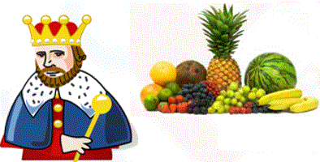

<!DOCTYPE html>
<html>
<head>
	<meta charset="UTF-8">
	<link href="../css/style.css" rel="stylesheet" />
</head>
 <body>
<script type="text/javascript" src="../../practise_code.js"></script>
<script>

// Plants
var questions = [

["What would be suitable heading for X in the following chart - <BR>","How they grow","How they are useless for us","How they are usefull to us ","How they are harmless to us","C"],
["I  am green and small. I can make you cry. I am a _______.","Peas","Chilly","Ladyfinger","Spinach","B"],
["Which activity is good for environment - <BR>","Planting Trees","Cutting Trees","Pollution","Vehicle Pollution","A"],
["Take the hint from the two pictures and identify the fruit <BR>","Apple","Pineapple","Mango","Orange","C"],
["Which of the following items we get from plants?","Wood","Fruits","Pulses","All of these","D"],
["Which of the following is not a fruit?","Grapes","Watermelon","Cucumber ","Orange","C"],
["Which one of the following is necessary for the growth of a plant?","Water","Injection","Medicine","None","A"],
["Cooking oil is obtained from - ","Peanut","Walnut","Soybean","All of these","D"],
["We eat seed from - ","Spinach","Apple","Pineapple","Mango","B"],
["Pooja has orange tree in the backyard of her home. One day, her younger sister picked almost all flower from the tree. This will result in________ ","Increased fruits","Loss of fruit","None of above","All of above","B"],


]

</script>
<table><tr>
  <td class="timer-pic"></td><td class="timer-text"><p id="demo" ></p></td> 
</tr>
</table>
<h2 id="test_status"></h2>
<div id="test"></div>
</body>
</html>